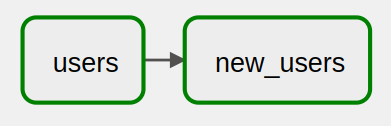

7 Custom Operators
Custom operators are a great way to get even more out of gusty. Two great use cases for custom operators are:
Auto-detecting dependencies - Have your tasks depend on one another without having to explicity set a
dependenciesblock. This is very useful for SQL tasks, and can allow you to achieve a dbt-like dependency graph.Running notebooks - Just take a notebook and run it as a pipeline task. It’s pretty much that simple!
7.1 Auto-detecting Dependencies
How It Works
In gusty, the task name is the file name.
gusty (optionally) makes available to your custom operators a
task_id, which is the task name. Just specifytask_idas an argument in the operator’s__init__method, and gusty will pass it in when building your task.If you name your SQL tables after the
task_id, you can detect table names in your SQL, which in turn can be leveraged as a list of dependencies.If you attach this list of dependencies as an attribute on your custom operator, gusty automatically wires up these dependencies for you.
Let’s make an example custom SQL operator that takes advantage of this.
Example Operator
To make our custom operator we will use:
The
PostgresOperatorfrom Airflow’s Postgres Provider, as the parent class for our custom operator.The Parser from the sql-metadata package, for detecting table names.
A common purpose of SQL tasks is to create tables, so we will have our users provide SELECT statements, and will wrap their statements in a CREATE OR REPLACE TABLE statement from within the operator.
This custom operator can be stored in our Airflow plugins folder, maybe under plugins/custom_operators/__init__.py. We’ll store a function for detecting tables, detect_tables, in this file, as well, for this example.
from sql_metadata import Parser
from airflow.providers.postgres.operators.postgres import PostgresOperator
# ---------------------- #
# Detect Tables Function #
# ---------------------- #
def detect_tables(sql):
"""Detects tables in a sql query."""
# Remove any Jinja syntax to improve table detection
jinjaless_sql = sql.replace("{{", "").replace("}}", "")
# Can return "schema.table", but we just want the "table"
tables_raw = Parser(jinjaless_sql).tables
# Only take "table" if "schema.table" is in tables_raw
tables = [t.split('.')[-1] for t in tables_raw]
return tables
# --------------- #
# Custom Operator #
# --------------- #
class CustomPostgresOperator(PostgresOperator):
def __init__(
self,
# gusty automatically passes in task_id when creating the task
task_id,
schema,
sql,
postgres_conn_id="postgres_default",
params=None,
**kwargs):
# gusty uses self.dependencies to create task dependencies
self.dependencies = detect_dependencies(sql)
# Always name your table after the task_id / file name
table = task_id
create_sql = f"CREATE OR REPLACE TABLE {schema}.{table} AS ({sql})"
super(CustomPostgresOperator, self).__init__(
task_id = task_id,
sql = create_sql,
postgres_conn_id = postgres_conn_id,
params=params,
**kwargs)Example Usage
users Table
Now that we have our custom operator, we can invoke it in a Task Definition File. Let’s use this customer operator to create a users table, in a Task Definition File named users.sql.
---
operator: plugins.custom_operators.CustomPostgresOperator
schema: app_data
---
SELECT
id AS user_id,
created_at
FROM raw_data.users_rawPer our custom operator, this will create a users table in our app_data schema.
new_users Table
Now we can make a second Task Definition File, new_users.sql, which references the users table.
---
operator: plugins.custom_operators.CustomPostgresOperator
schema: app_data
---
SELECT
user_id
FROM app_data.users
WHERE DATE(created_at) = CURRENT_DATE()In our Airflow DAG graph, the new_users task now automatically depends on the users task!

7.2 Running Notebooks
How It Works
Just like
task_idis a special keyword you can add to your custom operator’s__init__method, so isfile_path.file_pathwill be an absolute path to your Task Definition File, in this case a Jupyter Notebook.Declare a YAML cell in your Jupyter Notebook, specifying the
operatorthat should run the cell.Have your custom operator run the cell.
Example Operator
We’ll more or less take this example directly from the gusty demo.
To make our custom operator we will use:
The built-in BashOperator, for running the command that renders the notebook.
The nbconvert package to render the notebook.
Our operator will simply render the notebook as HTML and then delete it.
from airflow.operators.bash_operator import BashOperator
command_template = """
jupyter nbconvert --to html --execute {file_path} || exit 1; rm -f {rendered_output}
"""
class JupyterOperator(BashOperator):
"""
The LocalJupyterOperator executes the Jupyter Notebook.
Note that it is up to the notebook itself to handle connecting
to a database. (But it can grab this from Airflow connections)
"""
def __init__(
self,
# gusty automatically passes in file_path when creating the task
file_path,
*args,
**kwargs):
self.file_path = file_path
self.rendered_output = self.file_path.replace('.ipynb', '.html')
command = command_template.format(file_path = self.file_path,
rendered_output = self.rendered_output)
super(JupyterOperator, self).__init__(bash_command = command, *args, **kwargs)Example Usage
See the Juypter Notebook Task Definition File example in the gusty demo, in the stock_predictions DAG. Notice how the first cell in the notebook is a YAML cell (see Raw notebook).